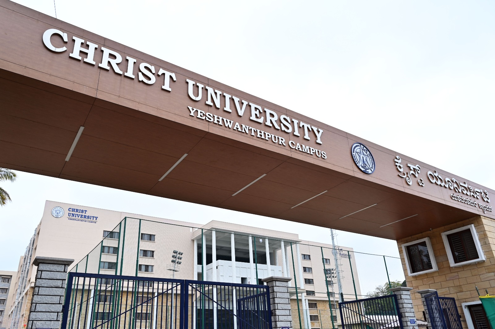

CHRIST University, Yeshwanthpur Campus

CHRIST (Deemed to be University), Yeshwanthpur Campus
Nagasandra Post, Bangalore – 560073
Established in 1969, CHRIST (Deemed to be University) stands as one of India's premier institutions, globally recognized for academic excellence and holistic development.
The Yeshwanthpur campus features state-of-the-art infrastructure and ultra-modern facilities tailored specifically for high-level academic conferences and research initiatives.
Strategically located in North Bengaluru with exceptional transport connectivity, the campus provides an inspiring, world-class environment. It serves as an ideal hub for industry-academia collaboration, fostering impactful innovation, global networking, and cross-disciplinary knowledge exchange.
Visit University Website